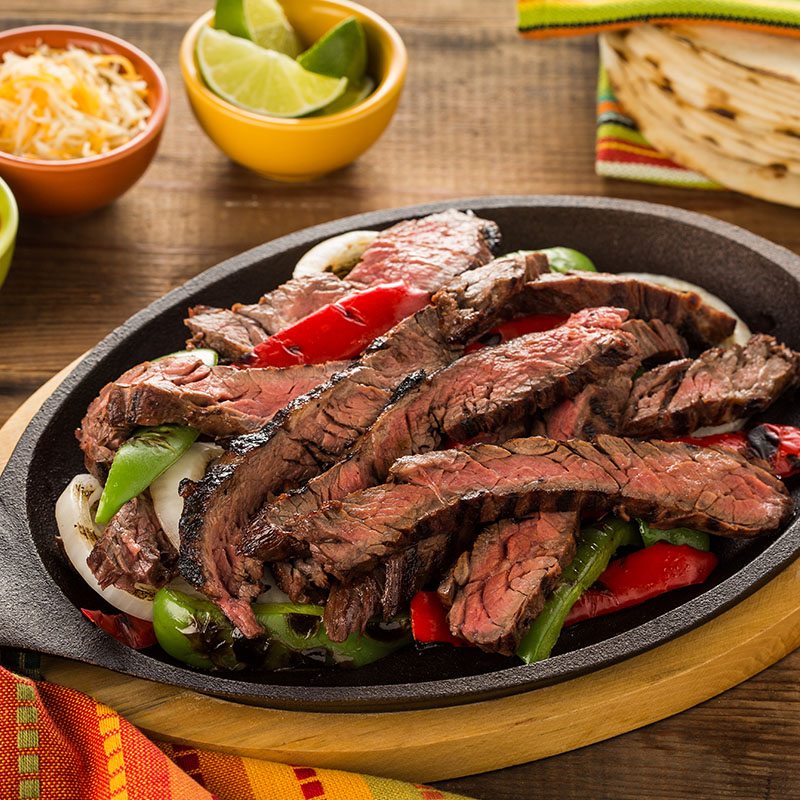

This page will tell you a little about my favorite foods from back home.
Peach tea
Peach tea is one of the most refreshing things to beat the sweltering Texas heat, its cool sweet flavor is second to none.
Brisket

You haven't lived until you've tried a good Texas brisket. Its soft, juicy meat is something you'll be hard-pressed to find anywhere else, in fact, just writing this makes me want to fly back for a piece.
Fajitas
My favorite Tex-Mex dish has to be beef fajitas. Their savory flavor brings me back to my childhood. Also, since you make them yourself it's slightly different every time. How can you not like them look, watch them sizzle!